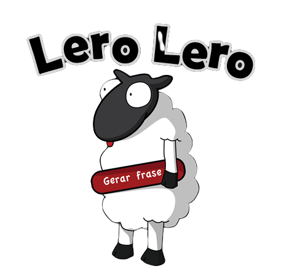

<section id="logo">
    <div class="range">
        <div class="main-div">
            <div class="intro-text">
                <h1>Lero Lero!</h1>
                <h6>Feito com gerador de Lero Lero</h6>
                <p>A equipe de suporte precisa saber que o módulo de recursão paralela facilitou a resolução de conflito dos argumentos que definem um schema dinâmico. Nesse pull request, a otimização de performance da renderização do DOM superou o desempenho na organização alfanumérico dos arrays multidimensionais. Dado o fluxo de dados atual, a disposição dos elementos HTML facilitou a resolução de conflito na estabilidade do protocolo de transferência de dados.</p>
            </div>
            <div class="intro-img">
                
            </div>
        </div>
    </div>
</section>